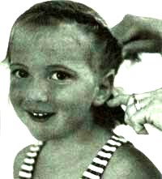
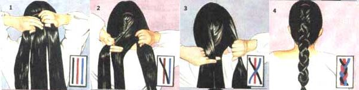
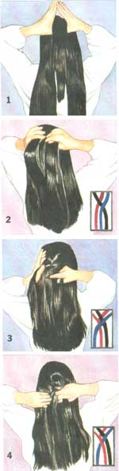
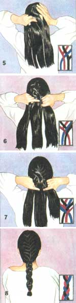

HANDWORKS
Learning a few of the basics can put you at peace with your crowning glory. Plus, you'll be able to trim your family budget.
If you ever want to strike up a conversation, just mention hairstyles and you're off to a long chat. After all, many folks feel that hair is the very bane of their existence, and yet few people are satisfied with their style. Those with straight hair want curly and vice-versa; many will go to extreme lengths to achieve what they "think" they want. Almost everyone has an experience they can recall, often interesting, sometimes incredulous.
For instance, I knew a girl in grade school who had long, thick wavy hair which she absolutely hated. She wanted silky straight hair, and she heard from someone that you could iron the waves out. You can guess what she did next. Yup, she took a regular flat iron to her hair and ended up burning almost all of it. It was so bad that she had to cut it above her ears and start growing it all over again.
I went about it in a completely different way. I rolled my hair on soup cans to straighten it. I would cut the ends out of used soup cans, wash them, and roll my waist length mass of wavy, tight curls up in them. If you can picture what I looked like you'll have yourself a good laugh, and you can't imagine how difficult it was to fall asleep in this state. Worst of all were rainy days. Whenever there was a day with any rain or even humidity, my hair would almost instantly frizz and my suffering would be all for naught.
But it's years later now and I am more comfortable with my hairstyle. I've learned which haircuts work best for me and I've even learned how to cut my family's hair.
Cutting and Styling Your Family's Hair
Cutting your children's hair is a great way to save money. The cost of a child's haircut at a barbershop often costs about the same as that of an adult. It can also be a real nuisance to plan a trip to town for yourself or your child, and many times you get to town and your child decides he/she doesn't want a stranger to wield scissors around his/her head. When you think about it, who can blame them? Living out in the "sticks" as I do and having four kids, I find that being the family barber is a great asset. Of course I've made mistakes, but nothing that couldn't be remedied.
With all the heads of hair I've encountered over the years, it seems that regardless of the style, we're all looking for the same thing-no-fuss hair. Keep in mind that I'm talking about basic trims, nothing fancy. The most important piece of advice I can give is this: Cut small amounts at a time; remember, you can't put it back on your head once it's been cut off. However, if you do cut too much off the first few times, don't panic. It'll grow out...and of course, there are always hats.
Things will go much more smoothly if you lay out everything you need before you start. It's frustrating to have to go looking for a comb when you're in the middle of cutting hair-especially a child's. By the time you return, the child will have either taken off for parts unknown or given him or herself a new haircut.
Always start with damp or wet hair. This makes it easier to handle, but keep in mind that hair becomes shorter after it has dried. So be conscious of "the drying factor." As you may know if you have curly or wavy hair, the drying factor is even more extreme with curls, which become much shorter when dry. So try to compensate for this before you start snipping.
Invest in a pair of sharp scissors with rounded tips. Trying to cut with dull shears is hopeless and results will not be pleasant. Rounded tips are also safer when it comes to cutting the hair of small chilren; too often they seem to have ants in their pants, making it difficult for them to sit still.
A good pair of hair clippers are a must for all types of hair cutting and trimming. They are indispensable for shaving the nape of the neck in order to give a short cut a neatly finished look. They usually come with various attachments or rakes for cutting hair to different lengths. They also come in handy for shaving heads in the hot summer months.
Place a towel or piece of sheeting around the neck of the person's hair that you'll be cutting and secure it with a pin. This will keep the clippings from getting down the person's back, which can be extremely irritating.
Short Hair
Begin by wetting hair, keeping in mind the "drying factor." Don't part the hair unless you want a bowl-type look. Take small sections of hair at a time; work with strands of about a half-inch wide and less than a quarter-inch thick. If you try cutting large clumps of hair at a time, the cut will looked unkempt, like you used a dull knife. Starting at the front, use a comb to pull the first strand of hair up and trim straight across. Take the next top section and do the same; continue all the way past the crown of the person's head, checking to make sure that the sections are even with each other. To make the sides of your hair "feather" (or layer), pull the hair up vertically with a comb and cut. Continue doing this for each section on the sides.
Long Hair
It has been said that if we could hang upside down and cut our hair, it would be the perfect cut. Unfortunately this is impossible and would result in uneven layers anyway. If you have long hair and only need to trim the ends, wet your hair and make an even, middle part starting at the top of the head and going all the way back to the nape of the neck. Bring the hair forward on each side, and comb out so that it's perfectly smooth. Hold your head steady and cut the shaggy ends off straight across. This will give you a nicely curved look when your hair is combed back. If you want it to be perfectly straight, you can line a ribbon up against the bottom edges of hair trim straight across.
Children's Hair
Cutting a child's hair is often nerve-wracking. Most of the time we treat children like adults and expect them to sit quietly while we make them look tidy. Wake up and be prepared for anything!
First, sit the child at a level where you can comfortably reach his or her head;
bending over to cut hair is a real pain in the back (and neck). A high chair in front of a mirror works well. You're probably best off letting the child watch what you're doing. I've found that my children will look down while I'm snipping-they seem to enjoy watching their hair fall.
Another good way set up a hair cutting session is to lay a sheet on the floor and have the child sit in the middle of it, admiring his or herself with a hand mirror while you work around them. In any case, keep that child busy. Have him or her collect the hair as it falls (later, they can put it outside for birds, which use hair to build nests). Don't hurry; be calm, patient, and choose a time when the child is in a fairly cooperative mood.
One last important tip: If you're cutting bangs, be sure the child isn't raising his or her eyebrows while you're snipping-the bangs will be way too short and give the child an unfortunate look of permanent surprise.
Beards and Mustaches
Anyone can achieve a nicely groomed beard and/or mustache, as long as you take your time doing the trimming. Don't use a sideburns trimmer, which will make your beard look (and feel) bristled and prickly; use sharp scissors. Comb the beard and sideburns down, and then, starting at the sideburns, bring the hair out with a comb and trim off the excess, making sure that the scissors fully close with each cut. Continue; when you're done, the beard should feel smooth and soft.
Be extra careful when trimming mustaches. I learned my lesson the hard way. A friend arrived wanting me to trim his mustache for him. As I was cutting, I accidentally twisted the scissors in a way that a mustache hair got caught. I didn't notice, and as I pulled the scissors away from the mustache, I managed to pull the hair out by the roots. Though there was no noticeable damage done, it hurt my friend like heck. So hold the scissors properly, and cut firmly and evenly.
No matter how you wear your hair, it is important to keep it shiny and manageable. Once you establish a hair-care routine, your hair will be beautiful and you may even start to feel at peace with it.
As for brushing, hair does not need the "100 strokes a day" that our ancestors spoke of-25 to 30 strokes are plenty to distribute the natural oils. Any more can damage the roots.
There are three basic types of hair: normal, dry, and oily. Each requires different care. You'll find shampoos and conditioners available in the formula that is needed for your hair type. Other than that, don't be fooled by all the fancy advertisements promising you all sorts of things-just use a good basic shampoo and conditioner that is right for your hair.
Shampoos & Conditioners
The instructions on most shampoo bottles tell you to lather and rinse your hair twice; this isn't necessary for regular washings. One lathering should be plenty to clean your hair without stripping your natural oils or drying out your scalp. Do rinse your hair thoroughly with sparkling clear water to be sure no soap residue left.
How often you shampoo depends on your hair type, how active you are, and the environment in which you live. You should always wash you hair after strenuous exercise or spending time in the sun because of the increased amount of perspiration. And shampoo your hair after exposing it to chlorinated pool water or salt water, both of which can damage hair.
As for conditioners, choose one for your specific type. If you use the same conditioner for more than a month, your hair can become immune to its formula and won't be as effective as when you first started using it. You can avoid this by choosing a different brand, because companies use different formulas. The best way to do this is to purchase three different brands that work well for you. Use one for a month, then switch to a different one for the second month, another for the third month, and then return to the first brand.
Normal Hair
If your hair is "normal," you may choose to shampoo daily, although this isn't necessary. Use a shampoo formulated for normal hair, and use a separate conditioner about every fourth shampooing.
Oily Hair
To keep oily hair looking great, shampoo every day. Avoid shampoos that have any conditioner in them; they will leave a greasy residue in oily hair.
Dry Hair
Choose a shampoo especially designed for dry hair, preferably one with a conditioning agent in it. You'll notice that many "dry" hair shampoos are also for damaged hair. This is because dry hair tends to break and split easily. Wash hair infrequently because soaps and detergents strip hair of essential natural oils. Special conditioning is vital to keep dry, flyaway hair under control and manageable.
Here's a good once-a-month treatment: Put olive oil, baby oil, or conditioner (start with the size of a quarter; add more if necessary) into the palms of your hands. Run your fingers down and through your hair, starting at the scalp. Wrap your hair in a towel or plastic wrap and leave in for about an hour or longer for extremely damaged hair. Rinse thoroughly with warm water and lemon juice.
Once the basics are mastered, most people find their own way to braid comfortably. All braiding consists of is crossing over hair, tightening, taking up the next section of hair and continuing. (See bellow) Use coated rubber bands, which are easier on your hair.
French braids are particularly elegant, and although the process looks complicated, it's really quite simple. (See bellow) As you braid, gather additional strands and add them to the main braid-this results in graceful draping on each side. The look of the drape will vary considering how thin or thick the hair strands are.
Braids, plain or french, are the perfect hairstyle while you're looking waiting for hair to grow out. It's also good for young girl's hair because it will stay neat all day and make the evening combing out process less painful.
•Mix vinegar and warm water to use as a rinse. This gets rid of excess soap residue and keeps hair extra shiny. Lemon juice adds golden highlights to hair.
•Always treat wet hair gently. It is weak in this state and can stretch and snap easily, which creates split ends and fly-away hair. Use wide-toothed combs to minimize breakage.
•To untangle snarls, comb hair out starting at the ends of the hair, working your way up. Knots at the nape of the neck are particularly tough; be patient.
1. With your thumbs above and slightly behind your ears, draw back and upward, gathering the hair that meets at the crown into a ponytail. Do not bind with a rubber band.
2. Divide hair into three sections. Cross left strand over the center strand so the two strands trade places, then the right strand over the center so that those two strands change places.
3. Hold the braid in your right hand, keeping the three strands separated with your fingers. Place your left thumb above and behind your left ear, and use it to draw a strand of hair that is half as thick as one of the original strands that's located in the braid.
4. Add newly gathered hair to the left strand and cross this increased strand over the center strand, so that the center strand is now to the left.
5. Hold the braid in your left hand, always keeping the three strands separate. Place your right thumb above and behind your right ear and use it to draw a strand half as thick as one of the originals towards the ponytail.
6. Add the newly gathered hair to the right strand and cross this increased strand over the center, so that the center strand is to the right.
7. Continue to gather hair from the left and right, adding it to the strands just before you cross them over the center.
8. When there is no more loose hair to gather, switch to a plain braid for the remaining hair and fasten with a coated rubber band.
|
 Plain Braiding BONNIE GARDENER 1. Begin by gathering your hair into a ponytail; secure with a coated rubber band. Divide into three strands. 2. Cross the left strand over the center strand; pull hair taut. 3. Cross the right strand over the center strand; pull hair taut. 4. Repeat steps two and three until your braid is the desired length. Secure at bottom with a coated rubber band. |
 |
 |
|
 |
|
|